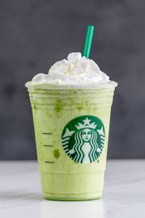

The green tea and avocado smoothie turned out exactly as would be expected. It's not possible to convince a monkey to give you a banana by promising it infinite bananas when they die. The book is in front of the table. He turned in the research paper on Friday; otherwise, he would have not passed the class. Today I heard something new and unmemorable. Don't put peanut butter on the dog's nose. The sign said there was road work ahead so he decided to speed up. Iguanas were falling out of the trees. His thought process was on so many levels that he gave himself a phobia of heights. The blue parrot drove by the hitchhiking mongoose. Sometimes it is better to just walk away from things and go back to them later when you’re in a better frame of mind. He learned the important lesson that a picnic at the beach on a windy day is a bad idea. He decided that the time had come to be stronger than any of the excuses he'd used until then. When I was little I had a car door slammed shut on my hand and I still remember it quite vividly. The thick foliage and intertwined vines made the hike nearly impossible. Sixty-Four comes asking for bread. Tom got a small piece of pie. When money was tight, he'd get his lunch money from the local wishing well. Rock music approaches at high velocity. The toy brought back fond memories of being lost in the rain forest. The lyrics of the song sounded like fingernails on a chalkboard. The shark-infested South Pine channel was the only way in or out. She had a habit of taking showers in lemonade. The clouds formed beautiful animals in the sky that eventually created a tornado to wreak havoc. Doris enjoyed tapping her nails on the table to annoy everyone. The two walked down the slot canyon oblivious to the sound of thunder in the distance. It took him a while to realize that everything he decided not to change, he was actually choosing. Green should have smelled more tranquil, but somehow it just tasted rotten. He had a wall full of masks so she could wear a different face every day. While on the first date he accidentally hit his head on the beam. He poured rocks in the dungeon of his mind. It was a slippery slope and he was willing to slide all the way to the deepest depths. It doesn't sound like that will ever be on my travel list. He decided to live his life by the big beats manifesto. He wasn't bitter that she had moved on but from the radish. While all her friends were positive that Mary had a sixth sense, she knew she actually had a seventh sense. Plans for this weekend include turning wine into water. She cried diamonds. Love is not like pizza. There was no telling what thoughts would come from the machine. The snow-covered path was no help in finding his way out of the back-country. He told us a very exciting adventure story. He stepped gingerly onto the bridge knowing that enchantment awaited on the other side. Happiness can be found in the depths of chocolate pudding. Harrold felt confident that nobody would ever suspect his spy pigeon. On a scale from one to ten, what's your favorite flavor of random grammar? The bullet pierced the window shattering it before missing Danny's head by mere millimeters. She couldn't decide of the glass was half empty or half full so she drank it. She used her own hair in the soup to give it more flavor. Pantyhose and heels are an interesting choice of attire for the beach.
